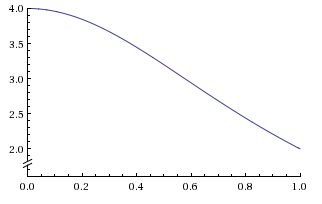
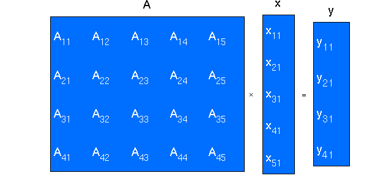

Compiling and Activites
Compiling an MPI program
To compile an MPI program on your local cluster, you can enter the following commands in the terminal:
First, we need to make an executable file from the MPI program:
mpicc -o filename filename.c
Then you are able to execute it using mpirun :
mpirun -machinefile machines -np #processes ./filename
Note
machines: is the instruction for running the executable file on which node, and how many times on which node. For example, machines on LittleFe has structure as follow:
- node000.bccd.net slots = 1
- node011.bccd.net slots = 1
- node012.bccd.net slots = 1
- node013.bccd.net slots = 1
- node014.bccd.net slots = 1
- node015.bccd.net slots = 1
Moreover, you can also compile an MPI program without using machines, you can use the following command to run only on the master node:
mpirun -np #processes ./filename
Note
Please ask your instructor for instructions on how to log in onto your local machine.
Activity 1: What is my \({\pi}\) ?
In this activity, we are going to compute \({\pi}\) using integration. We have formula:
\[\int_0^1 \frac{4}{1 + x^2} dx = {\pi}\]
Therefore, we can compute the area under the curve to get the value of the integral.

Figure 4: Graph for function
| Comments: |
We can split the area under the curve into bins. The idea is to group the bins into smaller chunks, and so we can use each process to calculate each chunk, and then combine the result into one value. Remember, that we can get a more accurate result if you split the area under the curve into more number of bins.
In this activity, we also want you to time your computation by using MPI_Wtime() function. We provide you some parts of the code, and would like you to complete TO DO, and then you can experiment with the different number of bins you are using. Moreover, we want you to execute your program with different number of processes, and compare your timings. We will walk you through the code step by step.
First, you need to initialize the MPI execution environment, define the size of communicator, and define the rank of each process. This should be straight forward for you. You are asked to complete this task.
Then you want to let each process know the number of bins you are using. Therefore, you need to broadcast the number of bins to all processes in our MPI_COMM_WORLD. You should use MPI_Bcast to broadcast the number of bins. You are asked to complete this part of the code.
Now we are ready to ask each process compute their task. We want to evaluate the integral of \(\frac {4}{1 + x^2}\) from 0 to 1, and we can do so by finding the sum of all bins from 0 to 1. Each bin is approximately \(\frac {1}{n} * \frac {4}{1 + x^2}\) (n is the number of bins). We are iterating over the number of bins, and we start from 0; therefore, to find the center of each bin, we need to add + 0.5 to variable i. Moreover, in the for loop, we ask the rank 0 to compute the first bin, the (nprocs) bin, and so on, rank 1 to compute the second bin, the (nprocs + 1) bin, and so on, ..., as long as value of i is less than n. This can be done by using the following piece of code:
/* Calculating for each process */
step = 1.0 / (double) n;
sum = 0.0;
for (i = rank; i < n; i += nprocs) {
x = step * ((double)i + 0.5);
sum += (4.0/(1.0 + x*x));
}
mypi = step * sum;
When all processes have finished their computations, their results are stored in mypi. Therefore, we can reduce all their results into one result, which is the value of \({\pi}\). Your task is to complete this part by using MPI_Reduce.
|
|---|
To download the source code to do your activity:
download mpi_pi_todo.c
To download the entire source code from www.mcs.anl.gov [1]:
download mpi_pi_done.c
Activity 2: Vector Matrix Multiplication
In this activity, we are going to compute vector matrix multiplication. We will illustrate the use of MPI_Bcast, MPI_Scatter, and MPI_Gather to do this multiplication. First, we want you to complete this MPI program by filling codes at TO DO. After having completed this task, try to run this MPI program by using different number of processes. Try to explain yourself what is happening !
I will explain how the vector matrix multiplication works. First, let’s say we have a matrix A, and a vector x as below:

Figure 5: vector matrix multiplication Obtained from cms.uni-konstanz.de [2]
This multiplication produces a new vector whose length is the number of rows of matrix A. The multiplication is very simple, we take a row of matrix A dot product with vector x, and this produces an element of the result vector. For instance, the first row of matrix A dot products with vector x will produce the first element in vector y.
| Comments: |
We will step you through the source code for this MPI program. Since this is an MPI program, we need to create the MPI execution environment, define the size of the communicator, and give each process a unique rank. You are asked to completed this part of the code.
After having initialized the MPI environment, we want to ask the master to initialize the vector and matrix we are going to multiply. In order to do that, we check if the process is master. If so, we initialize the matrix and vector.
if (rank == 0) {
/* Initialize the matrix and vector */
for(i=0; i < WIDTH; i++) {
vector[i] = 1;
for(j = 0; j < WIDTH; j++) {
matrix[i][j] = 1;
}
}
}
Since the vector is not very large and all processes must have this vector to do the multiplication, we will broadcast the entire vector to all processes. We do this by using MPI_Bcast. In addition, we want to distribute the matrix to each process in the MPI_COMM_WORLD. We would do this using MPI_Scatter. You are asked to complete this task.
When all processes can see the vector and some rows of matrix, they are now able to do the multiplication. We need to store their result in the result vector.
for(i = 0; i < chunk_size; i++) {
result[i] = 0;
for(j = 0; j < WIDTH; j++) {
result[i] += local_matrix[i][j] * vector[j];
}
}
The last part you need to complete is to gather all result vectors in all processes, and store them in the output vector, called global_result vector. This will be our result vector. Moreover, we can print out the value of each element in the global_result vector, and then terminate the MPI execution environment.
|
|---|
To download the source code to do your activity:
download vector_matrix_todo.c
To download the entire source code from www.public.asu.edu [3]:
download vector_matrix_done.c
References